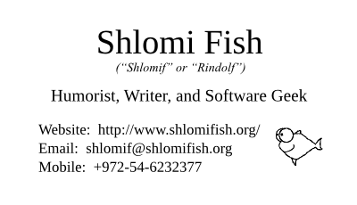

Shlomi Fish’s Personal Ad
I, Shlomi Fish (a.k.a Rindolf “Aim-very-high” Hitlower) am looking for a girlfriend, who will be:
A geek (= “amateur”, someone who loves what they do, not necessarily a computer/software geek).
A hacker (= an action hero/heroine, someone who bends or even breaks the rules, and does not accept their fate, all in order to earn their victory).
confident (which implies giving yourself the leeway to make mistakes and to avoid trying to please everyone at any given time)
In the Tel Aviv and vicinity area.
Who avoids prejudice, and is always on the path for self-growth and optimism
A non-smoker.
Speaks English and/or Israeli Hebrew.
Now, about me, here's my card:
It reads: «Shlomi Fish (“Shlomif” or “Rindolf”); Humorist, Writer, and Software Geek ; http://www.shlomifish.org/ ; shlomif@shlomifish.org ; Mobile: +972-54-6232377».
So what do I have to offer for the relationship?
A great sense of humour, and experiences and insights from an active presence on social media venues.
I’m an intelligent, confident, and as a result - attractive and competent, geek and hacker, who is a capable writer, humorist and software developer, likes to socialise - both in real life and on Internet social media forums - is opinionated but always gives a benefit of doubt (and hates people who proclaim they are sure of the certainty of certain things).
I belong to the “Rindolfism” school of philosophy where Rindolfism is my personal, one-man, and dynamic (= constantly changes) idea system with many influences.
A promise that I will always love you for the simple reason that I love all past, present and future human beings out there. Furthermore, often my admiration for one’s competence and strength, manifests itself in being sexually attracted to them.
That put aside, I cannot promise being “faithful”. One day it’s possible that I’ll find the need to terminate our relationship, and we both move on. I also feel that two partners in a relationship don’t own each other’s love life or sex life - they just share them. And finally, we both are allowed to flirt with other people.